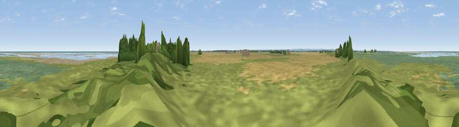

Viewpoint near North Somercotes
#22547 in England · top 30% of its area beats it · near North SomercotesWhere it is
The exact computed spot (TF 42726 99850). Click the marker for map links.
The view, rendered

A 360° render of this exact spot computed from the terrain model, tree cover and land cover — summer colours, afternoon light, calibrated against photographs of famous viewpoints. Real trees, hedges and buildings will differ in detail.
The panorama
Grey silhouette: terrain skyline in each direction (720 bearings, Earth curvature and refraction included). Dashed green: skyline with trees (+15 m) and buildings (+8 m) as obstacles. Blue strip: how far the ground is visible on each bearing.
Where the view opens
Wedge length = distance to the farthest visible ground on that bearing (vegetation-aware). Rings at 10, 25 and 50 km.
What fills the view
34% grassland · 29% cropland · 20% wetland · 8% water · 6% bare ground · 2% woodland
Angular shares of the visible panorama (visual magnitude), not map area. Landscape diversity 0.65 (0–1 Shannon).
Key numbers
More beautiful places nearby
The staircase of upgrades: each row has a higher view potential than everything closer. Driving times are estimates from straight-line distance, calibrated against real road routing — check an actual route before setting out.
| Place | Direction | Drive | Score |
|---|---|---|---|
| Donna Nook | W · 0 km | ~1 min | 52.6 |
| Viewpoint near Ludborough | WSW · 16 km | ~28 min | 53.5 |
| Viewpoint near Wold Newton | W · 17 km | ~30 min | 57.3 |
| Viewpoint near Easington | N · 22 km | ~37 min | 60.5 |
| Fonaby Top | W · 30 km | ~47 min | 60.7 |
| Viewpoint near Claxby | W · 31 km | ~48 min | 64.9 |
| Viewpoint near Claxby | W · 31 km | ~49 min | 71.5 |
| Viewpoint near Bempton | NNW · 78 km | ~102 min | 72.8 |
53.47603, 0.14908 · source: osm viewpoint · position refined by local search. Computed location — check access rights before visiting.